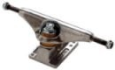

<table>
  <tr>
    <td rowspan="2"></td>
    <td style="font-weight:bold; background-color:#CCCCCC">Skateboard Trucks</td>
  </tr>
  <tr>
    <td>Skateboard trucks are what allow skateboards to turn. Each truck on a
      skateboard has kingpin, which is a nut and bolt combination that allows you
      to control how tight the truck is, which determines how easily it turns.
    </td>
  </tr>
</table>
